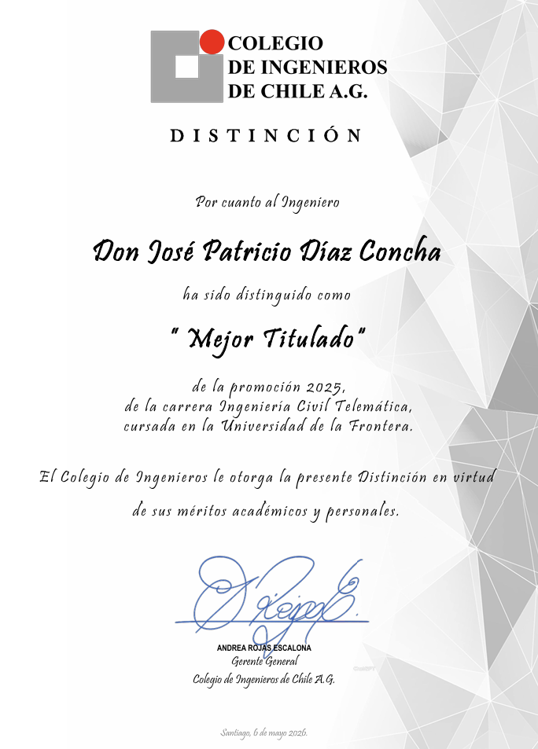
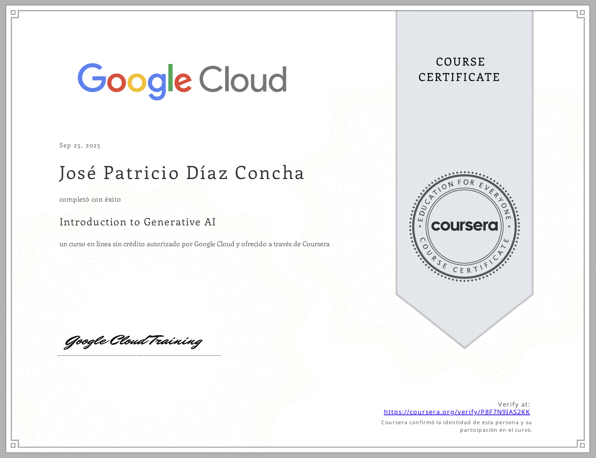

Linux Essentials
Fundamentos de Linux y línea de comandos · Cisco Networking Academy / NDG.
Formación y reconocimientos
Una selección breve de reconocimientos, certificaciones y formación complementaria. Los documentos completos se mantienen fuera del repositorio público.
Reconocimiento
Distinción otorgada por el Colegio de Ingenieros de Chile a un titulado de Ingeniería Civil Telemática de la Universidad de La Frontera.

Formación técnica
Credenciales verificables que complementan mi experiencia en soporte, infraestructura, redes y seguridad.
Fundamentos de Linux y línea de comandos · Cisco Networking Academy / NDG.

Fundamentos de redes y conectividad · Cisco Networking Academy.

Conceptos introductorios de ciberseguridad · Cisco Networking Academy.

Curso introductorio de Google Cloud realizado a través de Coursera.
Formación complementaria
Formación universitaria orientada a desarrollar capacidades para llevar adelante proyectos emprendedores en ámbitos productivos, sociales o culturales. Nota final: 6,6.
18 horas sobre comunicación efectiva, liderazgo, trabajo en equipo, gestión del tiempo, marca personal, finanzas personales, CV y entrevista laboral.
Criterio de publicación
Se muestran solo piezas que aportan contexto profesional. Los certificados con RUT u otros datos personales se conservan de forma privada y no se suben al repositorio público.